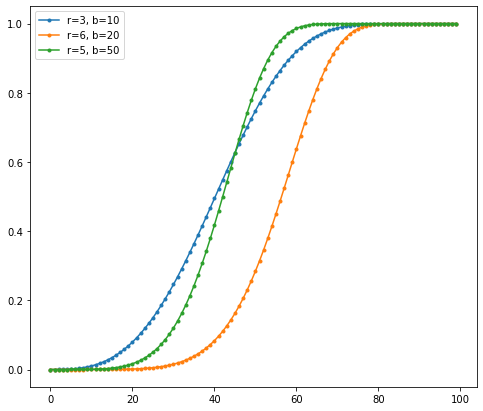
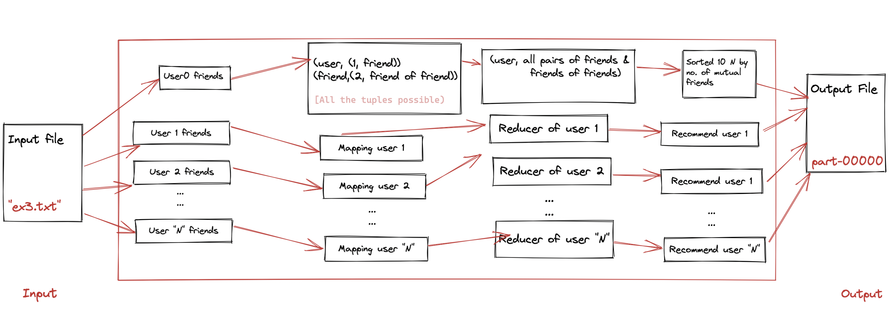

Welcome to Mining Big Data Assignment 2 Documentation
This Documentation consists of the answers to the assignment 2 questions and the code used to solve the assignment. You can find the readme file in the particular exercise folders for more information.
Private Repository till grades are released
Due to academic integrity policies, The source code will be submitted in the group's tab. And all the information about the code & application can be found in the documentation and report submitted.
You can find the code in the exercise1, exercise3 folders for the particular exercise.
The instructions to run the program is given in the Assignment 1. Please check out [here](https://beingmani.github.io/MBD-Assignment/assign1/)
Exercise 3
With the help of a numpy library function linspace(start, end, num) the values of s are evenly distributed from 0 to 1. Calculating the S-Curve by substituting the values of s,r,b

Exercise 4
Program to build an algorithm to recommend friends based on the number of mutual friends, we can say the pattern is given as User TAB Friends and for recommending the friend of friends. We will follow the below flowchart in the MapReduce approach, The Mapper will emit (user, user_friends) and all the possible tuples of friends of friends.

Once we have the mapper values with these key,value pairs. In the reducer, we ignore the friends list as they are already friends with the user. Focus on the friends of friends and counting the mutual friends, sorting the list by count to get the top 10 recommendations for the user
Folder Structure
The repository has all the code for both assignment 1 and assignment 2, the folder structure for assignment 2 is as follows:
Assign2
├── README.md
├── .gitignore
├── Ex1
│ ├── ex1.ipynb
│ └── ex1.py
│ └── s_curve.png
├── Ex3
│ ├── input
│ ├── jars
│ │ └── friendrecommendation.jar
│ ├── src
│ │ ├── com.mbdassign2
│ │ │ ├── frdrecommender
│ │ │ │ ├── FriendRecommendation.java
│ │ ├── input # input folders
│ │ ├── output # output folders
│ │ ├── Jars # SetupJars
└── Report.pdf